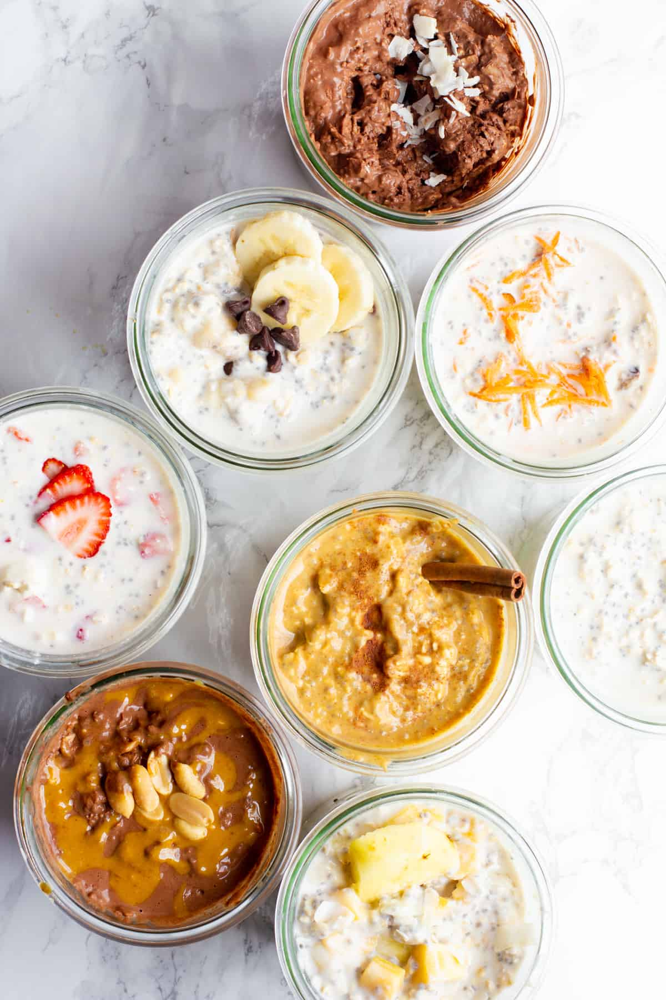

Overnight Oats

Good day to you, reader, I thank you for coming across this recipe page. Below you will find a simple yet filling recipe
for a healthy breakfast that will power your day. Think of this as a blank slate for you to add your preferred fruit, granola,
or other breakfast toppings.
- Plain oats (steel cut, rolled, whatever you prefer)
- Milk (cow, almond, oat, whatever you like)
- Some sort of container
- Fruits, granola, or any of your favorite toppings
Steps:
- Pour some oats into your container.
- Pour some milk into your container, enough to cover the oats by about a quarter of an inch.
- Cover your container. Put in the fridge the night before you plan to eat.
- When you are ready to enjoy, place into another bowl and top with your preferred toppings. Dig IN!